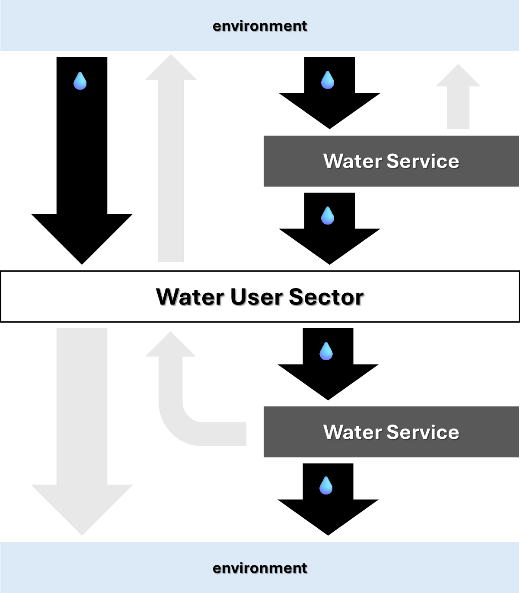
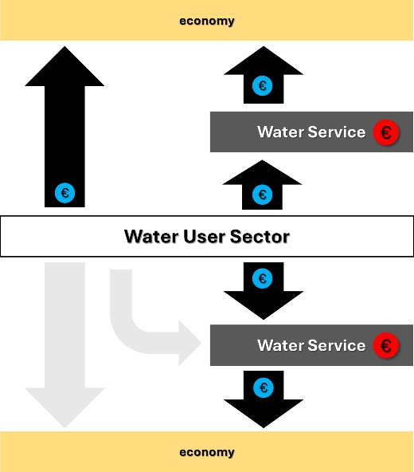
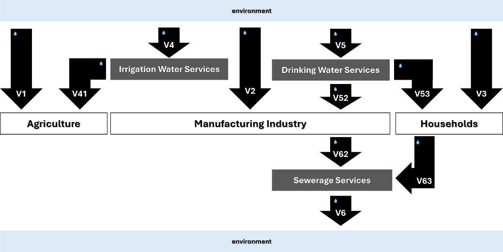
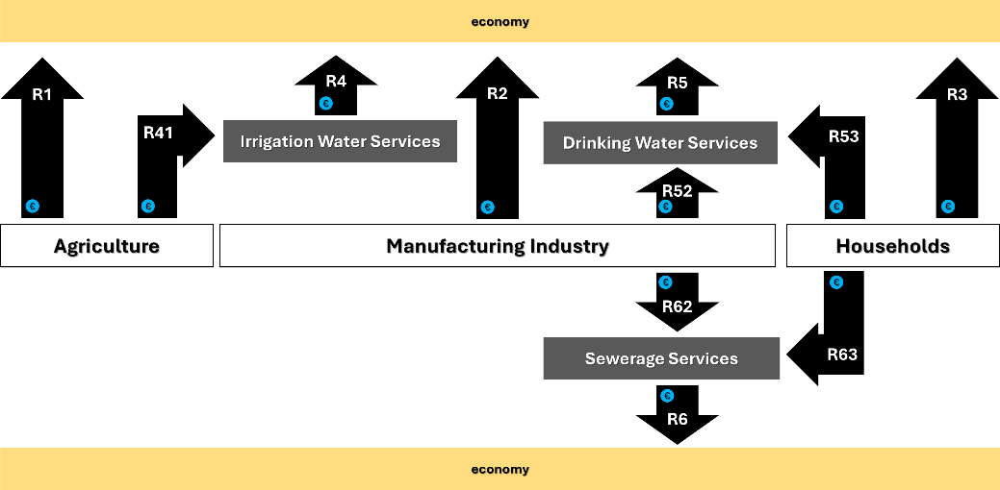

Economic analysis#
Last update: 2026-05-08
Purpose and overview#
The document revises the Economic Analysis & Services classes used in the 3rd cycle of reporting of the Water Framework Directive River Basin Management Plans (Figure 102) and presents a proposal for the electronic reporting in the 4th cycle.
classDiagram
direction TB
class EconomicAnalysis {
+ updatedEconomicAnalysis: YesNoPartially_Union_Enum
+ economicAnalysisReference: ReferenceType [0..*]
+ costEffectiveness: CostEffectiveness_Enum
+ costEffectivenessReference: ReferenceType [0..*]
+ article9DrinkingWater: YesNoCode_Enum
+ article9Wastewater: YesNoCode_Enum
+ article9Irrigation: YesNoCode_Enum
+ article9SelfAbstraction: YesNoCode_Enum
+ article9WaterStorage: YesNoCode_Enum
+ article9FloodProtection: YesNoCode_Enum
+ article9Navigation: YesNoCode_Enum
+ article9Other: string1000
+ article94: YesNoCode_Enum
+ article94Reference: ReferenceType [0..*]
+ costRecoveryReference: ReferenceType [1..*]
}
class Service {
+ service: ServiceType_Enum
+ serviceOther: string1000 [0..1]
+ serviceCostInstrument: YesNoPartially_Union_Enum
+ serviceCostInstrumentReference: ReferenceType [0..*]
+ serviceVolumetricCharges: YesNoPartially_Union_Enum
+ servicePriceLevel: ThresholdType
+ serviceFinancialCostIncluded: YesNoPartially_Union_Enum
+ serviceFinancialCostCalculation: YesNoPartially_Union_Enum
+ serviceFinancialCostRecovery: NumberPercentageAboveType
+ serviceEnvironmentalCharge: YesNoCode_Enum
+ serviceEnvironmentalChargeScale: MSorRBD_Enum [0..1]
+ serviceEnvironmentalChargeRevenues: NumberDecimalType [0..1]
+ serviceEnvironmentalChargeRevenuesUse: YesNoPartially_Union_Enum [0..1]
+ serviceExternalEnvironmentalResourceCost: YesNoCode_Enum [0..1]
+ serviceExternalEnvironmentalResourceCostSignificance: YesNoCode_Enum [0..1]
+ serviceExternalEnvironmentalResourceCostInternalisation: YesNoPartially_Union_Enum [0..1]
+ serviceExternalEnvironmentalResourceCostJustification: string2500 [0..1]
+ serviceWaterUseHouseholds: YesNoCode_Enum
+ serviceWaterUseAgriculture: YesNoCode_Enum
+ serviceWaterUseIndustry: YesNoCode_Enum
+ serviceWaterUseOther: string1000 [0..1]
+ serviceWaterUseContribution: YesNoCode_Enum
}
class RBMPPoM {
+ countryCode: CountryCode_Enum
+ euRBDCode: FeatureUniqueEUCodeType
}
EconomicAnalysis --> RBMPPoM: 1..1
Service --> RBMPPoM: 1..*
Figure 102 Partial diagram for Economic Analysis and Water Services (RBMPPoM_2022) schema - 3rd cycle#
Proposed structure - 4th cycle#
For the 4th cycle of reporting, the requested information detailed in (see also Figure 103):
---
config:
class:
hideEmptyMembersBox: true
layout: dagre
theme: neutral
---
classDiagram
direction TB
class dcMetadata{<<documents>>}
class Document {<<documents>>}
class CostRecovery {<<descriptive>>}
class CostRecoveryPerService {<<descriptive>>}
class VolumeRevenueCostPerService {<<descriptive>>}
dcMetadata ..> Document
CostRecovery "0..1" -- "0..n" dcMetadata
CostRecovery "1" -- "n" CostRecoveryPerService
CostRecovery "1" -- "n" VolumeRevenueCostPerService
classDef default fill:white,stroke:#000;
classDef forFixing fill:white,stroke:#f00;
Figure 103 WFD Economic Analysis dataflow - 4th cycle#
The former questionnaire in the EconomicAnalysis class is removed.
The questionnaires in the new
CostRecoveryandCostRecoveryPerServicetables maintains the same simplified Yes/No approach and requests information only for three collective services (drinking water supply services, irrigation water supply services and wastewater collection and treatment services).The Service table is removed. Information about volumes, revenues and costs is requested in the
VolumeRevenueCostPerServicetable, using the standard structure for statistical data commonly used by Eurostat.
Descriptive data - 4th cycle#
CostRecovery table#
The questionnaire in the CostRecovery table
requests information at River Basin District level.
See Figure 104
and Table 61.
---
config:
class:
hideEmptyMembersBox: true
layout: dagre
theme: neutral
---
classDiagram
direction TB
class CostRecovery {
+ euRBDCode: wiseIdentifier
«adequate-contribution»
+ adequateContributionAccount: YesNo
+ adequateContributionSectoral: YesNo
«polluter-pays-principle»
+ pppAccount: YesNo
+ pppERCBased: YesNo
+ pppTargetPolluters: YesNo
«incentives»
+ incentivesAccount: YesNo
+ incentivesEmpiricalInformation: YesNo
+ incentivesDifferentiated: YesNo [0..1]
+ incentivesWaterScarcityUse: YesNo
}
classDef default fill:white,stroke:#000;
classDef forFixing fill:white,stroke:#f00;
Figure 104 CostRecovery table - 4th cycle#
Column |
Definition |
|---|---|
euRBDCode |
Identifier of the River Basin District |
adequateContributionAccount |
Is there an account of adequate contribution to service costs? |
adequateContributionSectoral |
Is such an account based on sectoral cost recovery rates? |
pppAccount |
Is there an account of the application of the Polluter Pays Principle (PPP)? |
pppERCBased |
Is the account based on estimates of Environmental & Resource Costs (ERC)? |
pppTargetPolluters |
Does the account describe how charges target relevant polluters? |
incentivesAccount |
Is there an account of adequate incentives of the pricing instruments? |
incentivesEmpiricalInformation |
Is the account based on empirical information on tariff schemes? |
incentivesDifferentiated |
If incentivesEmpiricalInformation = ‘Yes’, is the information differentiated over sectors or services? |
incentivesWaterScarcityUse |
Is there information on economic instruments used for water scarcity? |
CostRecoveryPerService table#
The questionnaire in the CostRecoveryPerService table
maintains the same simplified Yes/No approach and requests information
only for three collective services (drinking water supply services,
irrigation water supply services and wastewater collection and treatment services).
See Figure 105
and Table 62.
---
config:
class:
hideEmptyMembersBox: true
layout: dagre
theme: neutral
---
classDiagram
direction TB
class CostRecoveryPerService {
+ euRBDCode: wiseIdentifier
+ waterService: WFDWaterService
«cost-recovery-principle-application»
+ costRecoveryFull: YesNoNotApplicable
+ costRecoveryCorroborated: YesNo [0..1]
«justification»
+ nationalMethodologyApplied: YesNo [0..1]
+ justificationLessFullRecovery: YesNo [0..1]
+ justificationFactor: string [0..1]
+ justificationSectoralInformation: YesNo [0..1]
«exemption»
+ article94Exemption: YesNo [0..1]
+ article94Justification: YesNo [0..1]
}
classDef default fill:white,stroke:#000;
classDef forFixing fill:white,stroke:#f00;
Figure 105 CostRecoveryPerService table - 4th cycle#
Column |
Definition |
|---|---|
euRBDCode |
Identifier of the River Basin District |
waterService |
Information is requested for each of the following services: |
costRecoveryFull |
Does the RBMP report whether cost recovery is (nearly) full? |
costRecoveryCorroborated |
Is the extent of cost recovery corroborated with rate calculations? |
nationalMethodologyApplied |
Is there a national methodology applied in these calculations? |
justificationCostRecovery |
If costRecoveryFull = ‘no’, is there a justification based on mitigation factors (Art 9(1))? |
justificationFactor |
If justificationCostRecovery = ‘yes’, report the mitigation factors. |
justificationSectoralInfo |
If justificationCostRecovery = ‘yes’, does this justification use sectoral information? |
article94Exemption |
Does the RBMP mention the “established practices” exemption (Art 9(4))? |
article94Justification |
If article94Exemption = ‘yes’, is there a justification for this exemption? |
Data at water service level - overview#
The data structure was simplified to a core set of quantitative data for a limited number of water services and water user sectors. The purpose is to obtain a consistent overview across Europe, at river basin district level.
Information is requested:
about the physical volumes of water, the revenues and the costs
for three water user sectors – agriculture, industry and households (see Table 63)
and for three water services – public drinking water supply services, public irrigation water supply services and sewerage services (see Table 64).
Water user sector |
Definition |
Notes |
|---|---|---|
AGRICULTURE |
Includes: |
|
MANUFACTURING INDUSTRY |
Includes: |
By definition, the volume of water abstraction by the MANUFACTURING INDUSTRY (NACE 10–33)
sector for self‑supply excludes water abstraction by NACE 36 entities. |
HOUSEHOLDS |
Aligned with the OECD/Eurostat Joint Questionnaire on Inland Waters,
the term “Households” refers to the resident population
as final users of supplied water and generators of domestic wastewater. |
Water service |
Definition |
Notes |
|---|---|---|
DRINKING WATER SERVICE |
Water supplied by economic units engaged in collection, purification and distribution of water,
i.e. under NACE Code 36.00 (Water collection, treatment and supply). |
For the purposes of the 4th cycle of electronic reporting,
note the restriction to “drinking water supply”. |
IRRIGATION WATER SERVICE |
Same as above. |
For the purposes of the 4th cycle of electronic reporting,
note the restriction to “irrigation water supply”. |
SEWERAGE SERVICE |
Wastewater collection, treatment and discharge services
provided by economic units under NACE Code 37.00 (Sewerage). |
For the purposes of the 4th cycle of electronic reporting,
note the restriction to the treatment of urban wastewater. |
a) |
b) and c) |
 |
 |
a) physical volumes of water
The flows represented by grey arrows in the diagram are not required (water returned without use, e.g. due to evaporation or losses during transport, reused/recycled water supplied back to the water user sectors, direct discharges by the water user sectors). Note that the gross freshwater abstraction includes only water abstracted from inland surface and groundwater bodies – desalinated water and water imports are not quantified. The requested data are the estimated average annual volumes in million cubic metre, over a specified reference period, in the river basin district. |
b) revenues
The requested data are the estimated average annual total revenue in million units of the national currency, in the river basin district, for the volumes quantified in a). c) costs |
{kind=link}
{kind=link}
The requested data on water volumes is detailed in Figure 106. The relevant concepts are aligned with the OECD/Eurostat Joint Questionnaire on Inland Waters and the Eurostat Regional Water Questionnaire and defined in Table 66.
{kind=link}

Figure 106 Conceptual diagram for the requested data on volumes - 4th cycle#
Diagram |
Concept |
Relevant concepts |
Notes |
|---|---|---|---|
V1, V2, V3 |
Water abstraction – for self‑supply |
“Self‑supply” refers to the abstraction of water directly by the user for their own final use,
rather than obtaining water from a public water supplier or another user. |
The volumes are reported in the river basin district where the point of abstraction is located. |
V4 |
Water abstraction – for other water supply - irrigation water |
Volume of water abstracted for the purpose of collective irrigation water supply. |
The volumes are reported in the river basin district where the point of abstraction is located. |
V41 |
Water use – from other water supply - irrigation water |
To maintain alignment with the OECD/Eurostat Joint Questionnaire,
“Other water supply - irrigation water” refers to the portion of water supplied to agriculture
that is not counted under either “self‑supply” or “public water supply”. |
The volumes are reported in the river basin district where the point of use/consumption is located. |
V5 |
Water abstraction – for public water supply - drinking water |
Volume of water abstracted for the purpose of collective drinking water supply. |
The volumes are reported in the river basin district where the point of abstraction is located. |
V52, V53 |
Water use – from public water supply - drinking water |
Water supplied by economic units engaged in collection, purification and distribution of water.
“Public” means publicly accessible service — provided either by public or private operators —
not “public sector”. |
Note that the desalination of marine water to produce water as the principal product is included in the Public Water Supply definition and reporting under the OECD/Eurostat Joint Questionnaire (see ABS_PWS). However, for the 4th cycle of electronic reporting under the WFD, the volumes reported for ‘Water use - from public water supply - drinking water’ (see V52 and V53) do not include desalinated water. |
V6 |
Water returns – Discharge of treated effluents |
The volume of wastewater that has undergone a treatment process
in an urban wastewater treatment plant (UWWTP)
and is subsequently released back into the environment —
typically into rivers, lakes, transitional waters, coastal waters,
or infiltrated into the soil or groundwater. |
The volumes are reported in the river basin district where the point of discharge is located. |
V62, V63 |
Sewerage – Collection and treatment of wastewater |
See Table 63
for the definition of the water user sector
Manufacturing Industry (for V62) and Households (for V63). |
The volumes are reported as an apportionment of the volume of treated effluents discharged in the river basin district. |
Adapted from [1].
All the information is requested at river basin district level and must refer to the same reference year, preferably close to the programming period.
The following generic guidelines apply to the reporting of volumes:
Volumes related to water abstraction (V1, V2, V3, V4, V5 in Figure 106) are reported based on the location of the point of abstraction. Only abstractions from freshwater surface water bodies (rivers and lakes, including reservoirs) and groundwater bodies are considered.
Volumes related to water use (V41, V52, V53 in Figure 106) are reported based on the location of the point of use/consumption. In other words, the volumes refer to water used in the river basin district.
Volumes related to water returns (V6 in Figure 106) are reported based on the location of the point of wastewater discharge. This includes discharges also to transitional and coastal water bodies located in the river basin district.
Given the guidelines above, and the fact that the data is requested at river basin district level (RBD), the following corollaries apply:
The balance condition V4 ≈ V41 is not expected to hold, due to losses during transport and water returned without use (which result in V4 > V41) or due to transfers between river basin districts (which may result in V41 > V4).
The balance condition V5 ≈ V52 + V53 is not expected to hold, again due to losses and transfers between river basin districts, including the cases where the user/consumer is outside the river basin district where the water is abstracted.
Note that V62 and V63 refer to the volume of wastewater collected and treated by the sanitary services, and not to the amount of wastewater generated by the manufacturing industry and household sectors. Note also that the condition V62 + V63 ⪅ V6 is expected to hold, because V62 and V63 represent a partial apportionment of V6, i.e. of the total volume of treated effluents discharged in the river basin district. The equality V62 + V63 ≈ V6 is not expected to hold (it would only hold if the contribution both of urban run‑off and wastewater from other water user sectors were negligible).
Finally, the condition V52 + V53 ≈ V62 + V63 is not expected to hold if the discharges include a significant amount of wastewater collected from users located outside the basin.
The requested data on revenues is detailed in Figure 107. The information must refer to the same year and to the same totals reported for the volumes of water.
The following generic guidelines apply to the reporting of revenues:
Water abstraction revenues (R1, R2, R3, R4, R5 in Figure 107) must include all environmental/resource taxes and administrative fees paid (directly or indirectly) to the general government.
Water supply revenues (R41, R52, R53 in Figure 107) represent the gross revenue of the irrigation water service providers and the drinking water service providers from fees charged to the end‑user sector (agriculture, manufacturing industry and households). The gross revenue must include the base service fee plus any environmental or resource costs incurred during abstraction that are passed through to the consumer to ensure an adequate contribution from that sector.
Wastewater discharges revenues (R6 in Figure 107) must include all environmental taxes and pollution levies paid directly or indirectly to the government for the emission of pollutants back into the environment.
Sewerage services revenues (R62 and R63 in Figure 107) represent gross revenue for wastewater collection and treatment services. The revenue must include the service fees charged to users plus any internalised environmental charges related to the final discharge that are passed on to the households or industrial users.
{kind=link}

Figure 107 Conceptual diagram for the requested data on revenues - 4th cycle#
Regarding the costs, the data is again requested for the same year for which volumes and revenues are reported. The total costs, OPEX and CAPEX should be reported for each of the three services in Figure 107, as well as the estimated global cost recovery rate.
The following generic guidelines apply to the reporting of costs:
VolumeRevenueCostPerService table#
Figure 108 presents
the standardised structure for the reporting of volumes, revenues and costs per water service,
using the ServiceVolumeRevenueCost table. The column names reflect the SDMX designations
(geo, time, dimension, obs_value, obs_unit, obs_status, obs_comment) typically used by Eurostat.
Volumes must be reported in million cubic metre, revenues and costs must be reported in million units of national currency (except for the cost recovery rate, which is reported as a percentage).
The dimension codes for the reporting of costs per water service are presented in Table 67.
The dimension codes for the reporting of volumes and revenues are presented in Table 68.
---
config:
class:
hideEmptyMembersBox: true
layout: dagre
theme: neutral
---
classDiagram
direction TB
class VolumeRevenueCostPerService {
+ geo: wiseIdentifier
+ time: gYear
+ dimension: VolumeRevenueCost
+ obs_value: nonNegativeValue
+ obs_unit: UnitOfMeasure
+ obs_status: ObservationStatus [0..1]
+ obs_comment: string4000 [0..1]
}
classDef default fill:white,stroke:#000;
classDef forFixing fill:white,stroke:#f00;
Figure 108 VolumeRevenueCostPerService table - volume, revenue and costs per water service – 4th cycle#
Dimension |
Description |
|---|---|
CST_IRR_TOT |
Irrigation water services – Total cost |
CST_IRR_CAP |
Irrigation water services – Capital expenditure |
CST_IRR_OPE |
Irrigation water services – Operational expenditure |
CST_IRR_CRR |
Irrigation water services – Cost recovery rate |
CST_DRI_TOT |
Drinking water services – Total cost |
CST_DRI_CAP |
Drinking water services – Capital expenditure |
CST_DRI_OPE |
Drinking water services – Operational expenditure |
CST_DRI_CRR |
Drinking water services – Cost recovery rate |
CST_WWT_TOT |
Sewerage services – Total cost |
CST_WWT_CAP |
Sewerage services – Capital expenditure |
CST_WWT_OPE |
Sewerage services – Operational expenditure |
CST_WWT_CRR |
Sewerage services – Cost recovery rate |
Diagram [4] |
Dimension |
Description |
From |
To |
|---|---|---|---|---|
V1 |
VOL_ABS_SS_AGR_IR |
Volume – Water abstraction – self‑supply for the agriculture sector |
Environment (inland waters) |
Agriculture (NACE 01) |
V2 |
VOL_ABS_SS_IND_C |
Volume – Water abstraction – for self‑supply for the manufacturing industry sector |
Environment (inland waters) |
Manufacturing industry (NACE 10–33) |
V3 |
VOL_ABS_SS_HH |
Volume – Water abstraction – for self‑supply for households |
Environment (inland waters) |
Households |
V4 |
VOL_ABS_OS_AGR_IR |
Volume – Water abstraction – for other water supply of irrigation water |
Environment (inland waters) |
Water collection, treatment and supply (NACE 36) |
V5 |
VOL_ABS_PWS_DRI |
Volume – Water abstraction – for public water supply of drinking water |
Environment (inland waters) |
Water collection, treatment and supply (NACE 36) |
V41 |
VOL_USE_OS_AGR_IR |
Volume – Water use – for other water supply of irrigation water |
Water collection, treatment and supply (NACE 36) |
Agriculture (NACE 01) |
V52 |
VOL_USE_PWS_DRI_IND_C |
Volume – Water use – from public water supply of drinking water to the manufacturing industry sector |
Water collection, treatment and supply (NACE 36) |
Manufacturing industry (NACE 10–33) |
V53 |
VOL_USE_PWS_DRI_HH |
Volume – Water use – from public water supply of drinking water to households |
Water collection, treatment and supply (NACE 36) |
Households |
V62 |
VOL_WWT_IND_C |
Volume – Sewerage – Collection and treatment of wastewater from the manufacturing industry |
Manufacturing industry (NACE 10–33) |
Sewerage (NACE 37) |
V63 |
VOL_WWT_HH |
Volume – Sewerage – Collection and treatment of wastewater from households |
Households |
Sewerage (NACE 37) |
V6 |
VOL_DIS_TWW |
Volume – Water returns – Discharge of treated effluents |
Sewerage (NACE 37) |
Environment |
R1 |
REV_ABS_SS_AGR_IR |
Revenue – Water abstraction – from self‑supply for the agriculture sector |
Agriculture (NACE 01) |
General government* |
R2 |
REV_ABS_SS_IND_C |
Revenue – Water abstraction – from self‑supply for the manufacturing industry sector |
Manufacturing industry (NACE 10–33) |
General government* |
R3 |
REV_ABS_SS_HH |
Revenue – Water abstraction – from self‑supply for households |
Households |
General government* |
R4 |
REV_ABS_OS_AGR_IR |
Revenue – Water abstraction – from other water supply of irrigation water |
Water collection, treatment and supply (NACE 36) |
General government* |
R5 |
REV_ABS_PWS_DRI |
Revenue – Water abstraction – from public water supply of drinking water |
Water collection, treatment and supply (NACE 36) |
General government* |
R41 |
REV_USE_OS_AGR_IR |
Revenue – Water use – from other water supply of irrigation water |
Agriculture (NACE 01) |
Water collection, treatment and supply (NACE 36) |
R52 |
REV_USE_PWS_DRI_IND_C |
Revenue – Water use – from public water supply of drinking water to the manufacturing industry sector |
Manufacturing industry (NACE 10–33) |
Water collection, treatment and supply (NACE 36) |
R53 |
REV_USE_PWS_DRI_HH |
Revenue – Water use – from public water supply of drinking water to households |
Households |
Water collection, treatment and supply (NACE 36) |
R62 |
REV_WWT_IND_C |
Revenue – Sewerage – from collection and treatment of wastewater from the manufacturing industry |
Manufacturing industry (NACE 10–33) |
Sewerage (NACE 37) |
R63 |
REV_WWT_HH |
Revenue – Sewerage – from collection and treatment of wastewater from households |
Households |
Sewerage (NACE 37) |
R6 |
REV_DIS_TWW |
Revenue – Water returns – Discharge of treated effluents |
Sewerage (NACE 37) |
General government [5] |
Documents dataset - 4th cycle#
The Documents dataset follows the standard structure used in various WISE dataflows (Figure 109):
The
dcMetadatatable provides the basic Dublin Core metadata elements about the delivery.If required by the data providers, the
licenseDocumentattribute allow the provision of additional information about the dataset.The
dcMetadatatable also functions as a “manifest file” explaining if the delivery contains data for a given river basin district or not.
The
Documenttable allows the upload of documents (for example, PDFs) or the provision of ahyperlinkto a document stored in a publicly accessible national web site.
---
config:
class:
hideEmptyMembersBox: true
layout: dagre
theme: neutral
---
classDiagram
direction LR
class dcMetadata {
«metadata»
+ title: string
+ creatorOrganisationName: string
+ creatorElectronicMailAddress: Email
+ description: string [0..1]
+ created: date [0..1]
+ language: Language [1..n]
+ license: Licence
+ rights: string [0..1]
+ rightsHolder: string [0..1]
+ licenseDocument: documentCode [0..n]
«manifest»
+ euRBDCode: wiseIdentifier
+ includesDescriptiveData: YesNo
}
class Document {
+ documentCode: wiseIdentifier
+ documentName: string250
+ hyperlink: URL [0..1]
+ documentFile: Attachment [0..1]
}
class Licence{
<<enumeration>>
CC0
CC_BY_4_0
exactMatch_CC_BY_4_0
narrowMatch_CC_BY_4_0
}
dcMetadata ..> Document: licenseDocument
dcMetadata ..> Licence: license
classDef default fill:white,stroke:#000;
classDef forFixing fill:white,stroke:#f00;
Figure 109 WFD EconomicAnalysis dataflow - 4th cycle - Documents#
The following criteria apply:
The
dcMetadatatable must contain one and only one record for each of the country’s river basin districts, identified by theeuRBDCode.The descriptive dataset tables are national, but the quality control will allow deliveries where some of the river basin districts have
includesDescriptiveData = no.
Annexes - Ancillary data sources#
Information about annual volumes is reported voluntarily by MS under the OECD/Eurostat Joint Questionnaire on Inland Waters and Eurostat Regional Water Questionnaire [6] [7]. Although the questionnaires have a much higher level of detail than required for the 4th cycle of electronic reporting, it is important that MS provide consistent data, which may allow more detailed analysis to be performed if necessary.
Table 69, Table 70 and Table 71 provide an overview of some of the OECD/Eurostat Joint Questionnaire tables and dimensions that are directly related to the data requested for the WFD 4th cycle of reporting.
Dimension 1 |
Dimension 2 |
Description |
|---|---|---|
FSW |
ABST |
Fresh surface water total gross abstraction (NACE 01–99) |
FSW |
ABS_PWS |
→ by Public water supply |
FSW |
ABS_AGR |
→ by Agriculture, forestry, fishing (NACE 01–03) |
FSW |
ABS_AGR_IR |
→ → of which for irrigation |
FSW |
ABS_IND |
→ by Manufacturing industry (NACE 10–33) |
FSW |
ABS_HH |
→ by Private households |
FGW |
ABST |
Fresh groundwater total gross abstraction (NACE 01–99) |
FGW |
ABS_PWS |
→ by Public water supply |
FGW |
ABS_AGR |
→ by Agriculture, forestry, fishing (NACE 01–03) |
FGW |
ABS_AGR_IR |
→ → of which for irrigation |
FGW |
ABS_IND |
→ by Manufacturing industry (NACE 10–33) |
FGW |
ABS_HH |
→ by Private households |
Dimension 1 |
Dimension 2 |
Description |
|---|---|---|
PWS |
TOTAL_HH |
Public water supply – TOTAL (NACE 01–99) |
PWS |
A |
→ Agriculture, forestry, fishing (NACE 01–03) |
PWS |
C |
→ Manufacturing industry (NACE 10–33) |
PWS |
EP_HH |
→ Private households |
SOWS |
TOTAL_HH |
Self and other water supply – TOTAL (NACE 01–99) |
SOWS |
A |
→ Agriculture, forestry, fishing (NACE 01–03) |
SOWS |
C |
→ Manufacturing industry (NACE 10–33) |
SOWS |
EP_HH |
→ Private households |
Dimension 1 |
Dimension 2 |
Description |
|---|---|---|
VOL_WW |
GEN_PS |
GENERATION OF WASTEWATER – POINT SOURCES – Total (NACE 01–99) |
VOL_WW |
GEN_AGR |
Agriculture, forestry, fishing (NACE 01–03) |
VOL_WW |
GEN_IND |
Industry – total (NACE 05–43) |
VOL_WW |
GEN_MAN |
→ Manufacturing industry (NACE 10–33) |
VOL_WW |
GEN_DOM |
Domestic sources – total |
VOL_WW |
GEN_HH |
→ Private households |
VOL_WW |
GEN_URB |
Urban wastewater – total generated |
VOL_WW |
TRT_URB_IF |
Treatment in WWTPs – total inflow |
VOL_WW |
GEN_IND_XURB |
Industrial wastewater (not part of Urban WWV) – total generated |
VOL_WW |
DIS_IND_IW |
→ Discharges to inland waters – Total |
VOL_WW |
DIS_IND_IW_AT |
→ → of which: Discharges to inland waters after treatment |
VOL_WW |
DIS_IND_IW_NT |
→ → of which: Discharges to inland waters without treatment |
VOL_WW |
DIS |
Total discharges of WWTPs (urban and other) – after treatment |
References#
Warning
The original document containing this revised model
can still be downloaded but should no longer be used.
See PROPOSAL - Version 2026.02.20
PDF